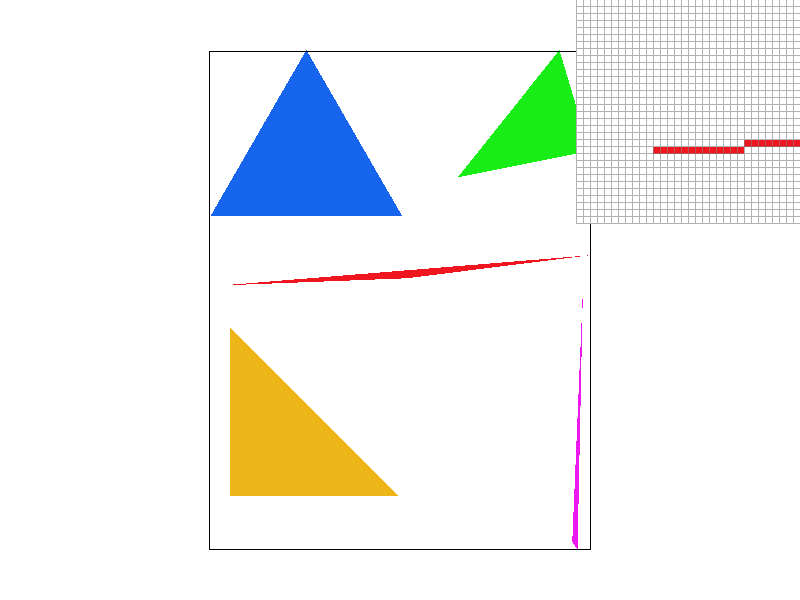
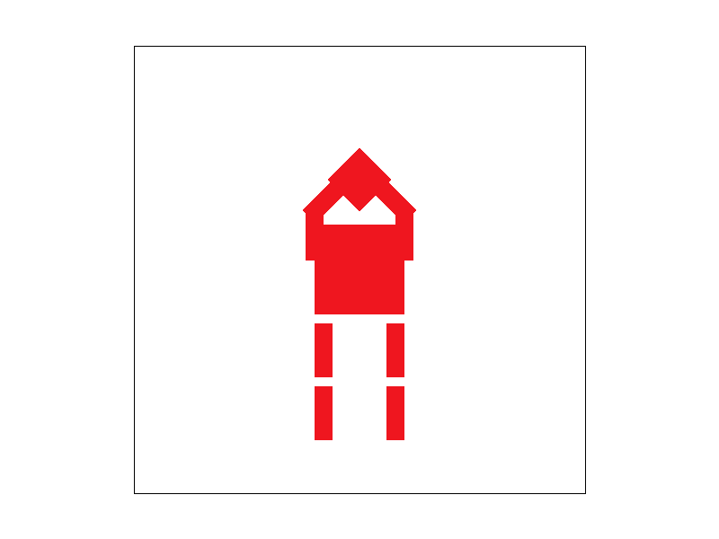
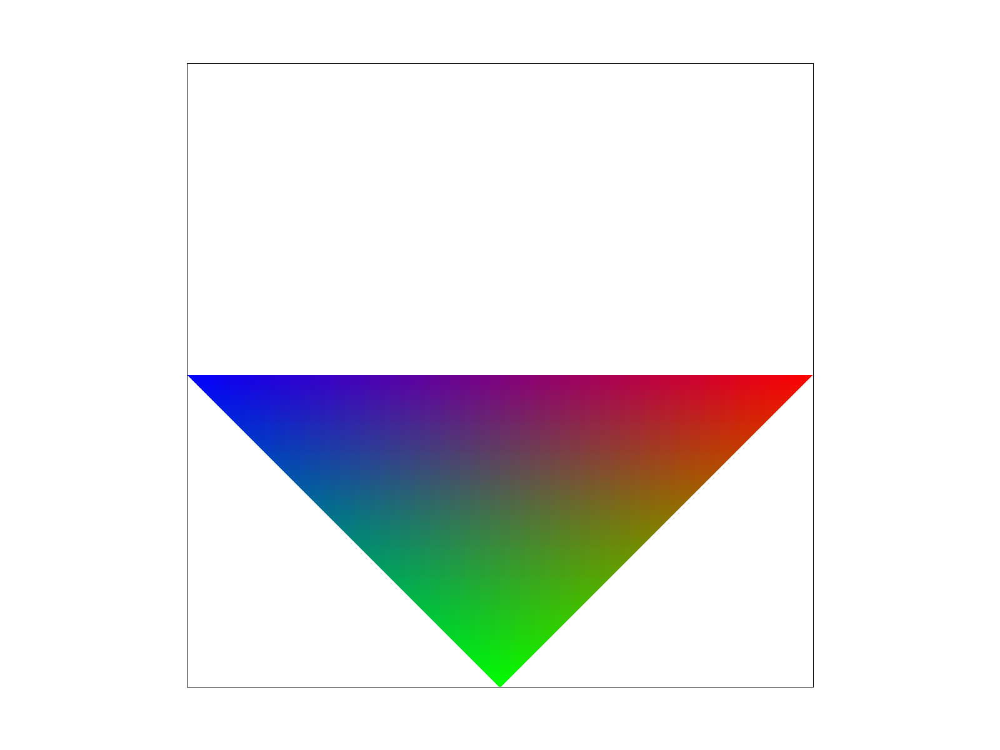
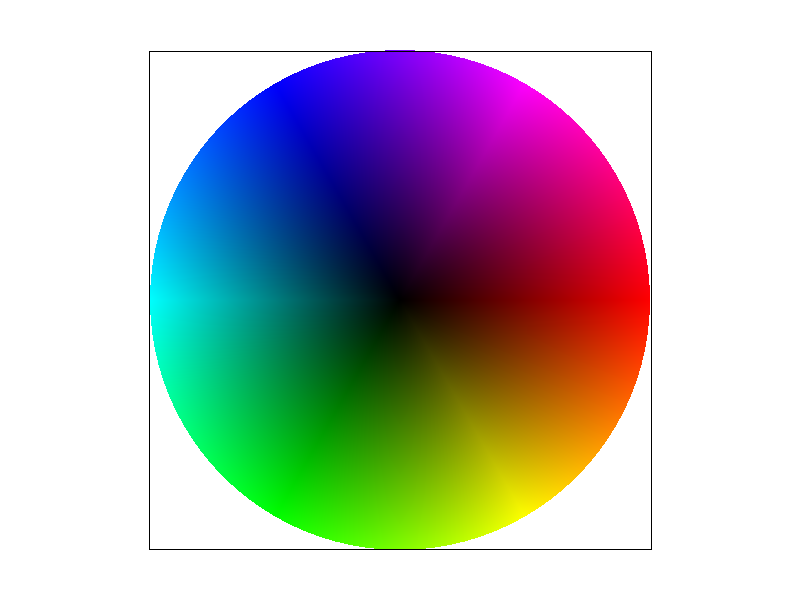
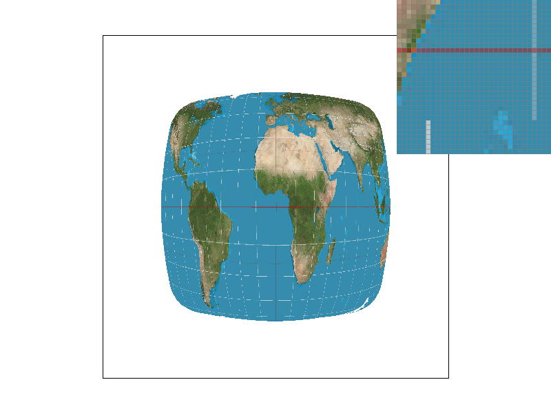

CS184/284A Spring 2025 Homework 1 Write-Up
Names:
Link to webpage:
cs184.eecs.berkeley.edu/sp25
Link to GitHub repository:
github.com/cal-cs184-student/hw-webpages-jr
Overview
I implemented rasteration of triangles, supersampling for the sake of antialiasing, transform algortihms to move and skew objects in screen space, different color sampling and texture methods, and, finally, multiple pixel sampling algortihms for rendering texture.
Task 1: Drawing Single-Color Triangles
For rasterization of triangles, I iterated over all possible x,y tuples in the bounding box, then checked whether or not any of those points exist inside the triangle described in the method signature using the 3 line test equations. I had an issue rendering test6.svg because I forgot to account for the winding order of the given vertices. I added a swap statement to make sure the winding order was always CCW. My algorithm is the same as the described one in class that checks each sample within the bounding box with no optimizations.
Task 2: Antialiasing by Supersampling
For supersampling, I simply iterated further over each bounding box coordinate per the sample rate and increased the size of the sample_buffer according to the sample rate as well. Then, I average the color based on each sample within the actual bounding box pizel and write that color to the actual buffer. This makes the edges of our rendered objects look much more smooth because instead of a binary off and on, there can be a gradient of color depending on how much of the reference image is contained in the pixel (no jaggies!!). The only thing I had to change about my rasterization pipeline was instead of writing directly to the pixel bufer, I had to write to the sample buffer first, average based on sample size, then write those values to the pixel buffer.
|

sample rate: 1
|
sample rate: 4
|
sample rate: 16
|
Task 3: Transforms
I tried to make my cubeman do the Home Alone scream, but with no mouth haha. I had to rotate both sections of each arm by 90 so that they pointed upwards. Then I translated both sections so they were closer its body. Finally, I set each top section of the arm to rotate another 45/-45 degrees so it looks like cubeman's elbows are bent.
|

Home Alone scream. . . kinda
|
Task 4: Barycentric coordinates
Using barycentric coordinates, you can calculate color values based on distance from a set of vertices. A point closer to a vertex has more of that color value than one further away. The image below (left) shows an example of three vertices each with colors red, green, and blue. As points get further toward the middle of the triangle, their colors start to mix with values of the other vertices and a extravagant gradient is born.
|

barycentric cords example
|

test7.svg
|
Task 5: "Pixel sampling" for texture mapping
Pixel sampling is the process of mapping the saved textures (texture space) onto actual pixels (screen space). Using the barycentric coordinates implemented in Task 4, I calculated the corresponding uv vector to plot it in texture space. Then, I found the texel by either grabbing the nearest texel in texture space to the sample point (nearest sampling) or by checking the 4 neighbors closest to the sample point and taking the linear interpolation between the horizontal and vertical directions.
In the following 4 images, it's clear that the bilinear sampling results in a much better rendering of the given sample. When the sampling rate is low, the differences between the two sampling methods are more drastic. If working with very large sample rates, however, using a nearest sampling algortihm might save a lot of time and resources while producing a similar result as bilinear.
|

nearest sampling, sample rate: 1
|
nearest sampling, sample rate: 16
|
|
bilinear sampling, sample rate: 1
|
bilinear sampling, sample rate: 16
|
Task 6: "Level Sampling" with mipmaps for texture mapping
Level sampling is the methodology in which you provide differing sample frequencies depending on how the texture space maps onto the screen space. If, for example, a large area in texture space maps to a small area in pixel space (shrunken area), then a high sample frequency is not needed and computational costs can be saved and diverted. In the reverse case, more sampling would be beneficial for stretched out textures because of their large area of pixel space they occupy. Using mipmaps to estimate a "level" of area stretching, I can now adjust the sampling rate and antialiasing power depending on the texture to pixel area ratio. The higher the level, the more downsampled a texture is. THe higher the number of samples per pixel, the better it is at antialiasing, but the computation time and memory cost is much higher. Between nearest and bilinear sampling, nearest is relatively faster, but its antialiasing power is very limited at a low sample rate.
|
nearest sampling, sample rate: 1
|
nearest sampling, sample rate: 1
|
|
bilinear sampling, sample rate: 1
|
bilinear sampling, sample rate: 16
|